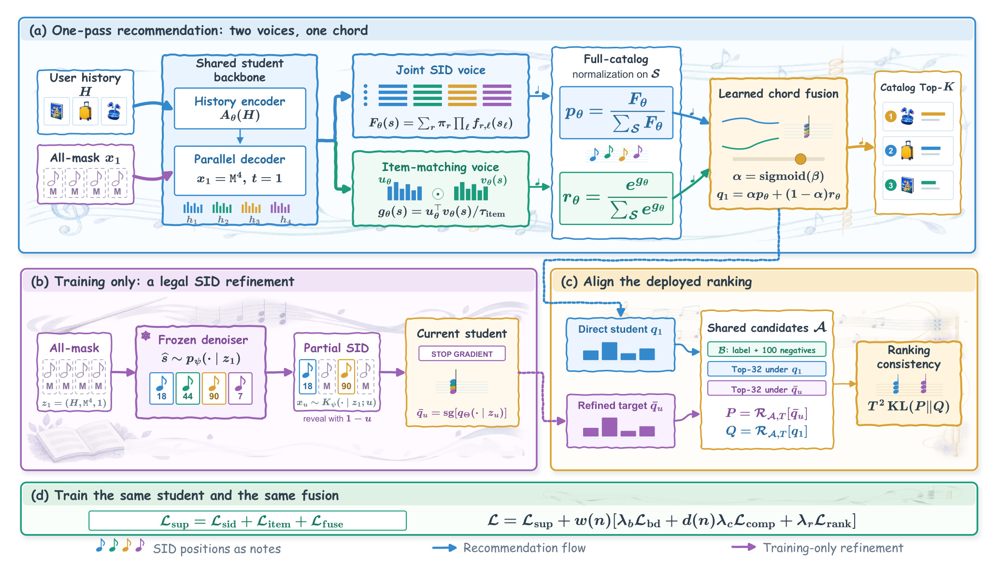
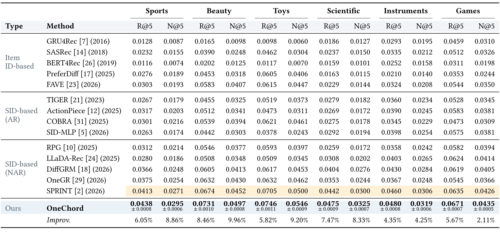
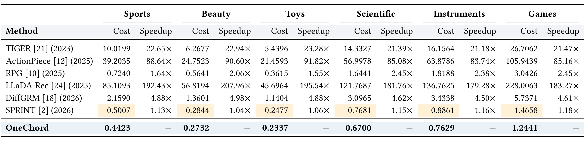
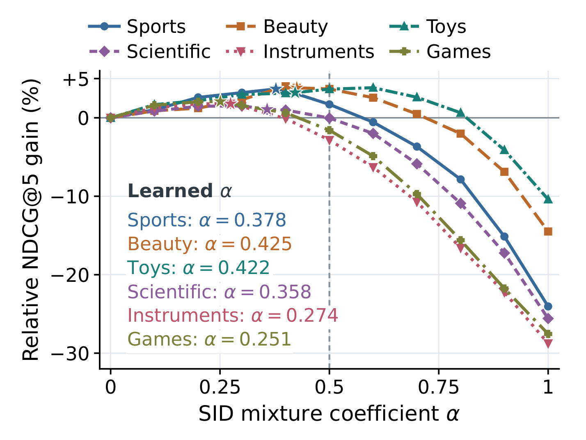
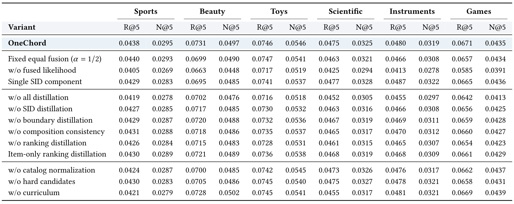
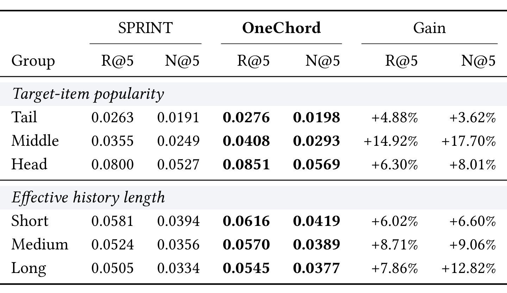

OneChord：让监督、细化蒸馏与一次推荐使用同一排序分布
论文：OneChord: Distill What You Rank, Recommend in One Pass。作者 Zesheng Li、Chengchang Pan、Honggang Qi，第一作者机构为中国科学院大学。初次公开时间为 2026 年 10 月 19 日 13:16（北京时间），本笔记核验于 2026 年 10 月 21 日。论文入口：arXiv:2610.25805。以下实验均为作者报告，本轮没有运行作者实验。
论文首页提供匿名代码入口，本轮访问返回 HTTP 403，无法检查实现、配置或权重，因此代码状态记为“入口存在，内容未核验”，不能据此声称已经可复现。
语义标识推荐可以融合代码概率与物品匹配证据，但最终推荐列表取决于融合后的目录分布；其支持集、归一化方式和分支权重共同决定哪些候选进入用户视野。问题是：怎样把训练时的细化收益传给一次前向预测器实际服务的排名？
1. 背景和问题
1.1 从预测语义标识走到实际推荐列表
生成式推荐把商品表示成短的语义标识，也就是 SID。若一个商品由四段代码组成，模型需要依据用户历史预测下一件商品对应的四段代码。自回归模型逐段生成，容易带来多次解码和搜索开销；并行模型同时预测所有位置，可以压缩神经网络调用次数。但是，四个位置分别预测得好，并不自动等于最终商品列表排得好。一方面，不同代码组合不一定都对应真实商品；另一方面，代码概率和商品向量相似度往往提供不同证据，部署系统实际使用的是两者融合后的排名。OneChord 把研究重心放在这个最终分布上，要求训练和蒸馏也面对同一个对象。
这里的“目录”不是各代码取值的笛卡尔积，而是固定映射下实际存在的、去重后的合法 SID 集合。同一 SID 可能对应不止一个原始商品，实验把它们视作一个目录条目。这样的定义决定了合法性、概率归一化和评测命中的口径：作者考察的是四段代码完全一致的 SID 命中。若业务要求区分共享 SID 的两件商品，还需要额外的商品消歧过程。笔记后面讨论全目录时，均沿用论文的合法 SID 目录，不能把它无条件替换成原始商品集合。
1.2 分支一致性为什么可能绕开真正的排序问题
最接近的工作 SPRINT 已经在一次前向过程中产生 SID 概率和物品匹配得分，并在合法目录上归一化后结合。OneChord 没有把“一次并行预测”本身作为全新的贡献。其新增问题是：如果训练只让直接预测和细化预测的 SID 分支接近，而最终服务还叠加了另一个物品分支，那么中间分支已经一致，实际 Top-K 商品仍可能不同。即使两分支各自指标不错，部署阶段改变归一化范围或固定融合比例，也可能重排候选。这说明蒸馏目标与服务打分函数之间存在一层容易被忽略的错位。
直观地说，学生应该学习自己真正要交付的分数。论文所说的“蒸馏实际排名”包含三个相互依赖的部分：先把两个分支放到同一个完整合法目录上，各自形成概率分布；再通过可学习权重形成最终融合；最后才能在训练的候选子集上限制并计算蒸馏损失。如果先在小候选集上各自做归一化，再套用原来的权重，分支在目录其他部分的概率质量就被擦掉了，局部融合可能已经不再对应服务时的排序规则。它不是普通的“负采样越难越好”问题，而是概率对象是否保持一致的问题。
1.3 细化能力怎样留在训练阶段
多步去噪或掩码细化通常可以通过看到部分代码改善预测，但在服务时执行它们需要额外计算。OneChord 将这一过程移到训练：冻结去噪器根据历史产生合法完整 SID，再按噪声水平揭示一部分代码，得到合法部分状态；当前学生读取这个状态，生成更充分条件下的融合分布；直接路径仍从全掩码状态预测，两者在共享候选上做匹配。这个分工尤其值得区分：去噪器负责提供状态，细化排名来自学生自己，而不是直接把冻结去噪器的最终排名当成教师答案。目标侧停止梯度，防止匹配损失同时推着目标分布移动。
因此，“一次推荐”指服务阶段只编码一次用户历史、并行解码一次。训练阶段仍包含教师预训练、合法状态采样、学生在部分状态上的额外计算，以及全目录打分和候选构造。即便服务仅有一次神经解码，它仍要对完整合法目录计算 SID 联合得分、物品相似度、归一化与 Top-K。这些成本会随目录增长，论文并没有把目录搜索消除。判断它的工程价值时，需要同时关注神经调用次数、目录大小、缓存向量以及训练预算，不能仅凭模型名称判断端到端延迟。
1.4 本文能回答与尚不能回答的范围
作者在六个 Amazon 商品域上比较准确率与生成成本，并通过融合、损失、候选与课程消融检验设计。方法的理论部分解释候选条件化如何重新分配融合权重，还给出直接预测保留细化预测 Top-K 的充分条件。这个条件同时要求候选覆盖、较小的逐预测 KL 误差和足够大的目标边界间隔，所以不能读作“蒸馏之后必然保留所有用户的排名”。平均训练损失较小也不意味着每个请求都满足该条件。实验则显示一些模块的收益有域差异，不能把完整模型的平均优势拆成每个模块都独立、稳定贡献的结论。
对推荐工程而言，本文最有价值的检验对象是已有系统是否用一种分数训练、另一种分数排序。若训练蒸馏只看中间表征或单一打分头，而最终列表由多个证据源融合，那么可以先检查归一化范围、候选支持集和融合权重是否贯通。这个启发不依赖把模型改得更大，但迁移需要当前系统拥有可计算的融合分布与可靠候选覆盖。论文的离线商品序列实验没有直接验证点击率、转化率、库存约束、多样性或在线收益，对这些指标只能形成待验证假设。
另外，合法性约束与学习能力要分别讨论。目录约束可以确保评分对象存在，却不能判断它是否满足用户当前需求；细化状态也可能来自一个语义相关但标签错误的合法补全。学生看到额外代码后产生的预测未必对每条样本都更准确。因此监督标签仍是必要锚点，蒸馏只能提供围绕该锚点的分布信息。论文将观测标签损失一直保留，并延迟增加一致性权重，正是在优化层面避免过早依赖尚未成熟的自目标。对方法的合理期待是改善直接预测，而不是把每次细化都当作可靠真值。
还有一个边界是两种温度的角色不同：物品匹配温度控制相似度转为目录概率时的尖锐程度，蒸馏温度则作用于融合后的候选分布。前者会改变服务分支的相对概率，后者只服务训练传递。将它们混成同一个调参旋钮，会遮蔽本文关注的融合一致性，也让跨域比较的解释变得困难。
2. 方法
2.1 语义目录与共享并行预测器
输入是历史交互序列与下一物品标签，固定 OPQ 索引先把每件商品映射成四个代码。设合法目录为 $\mathcal S$，历史为 $H$，状态为 $z_t=(H,x_t,t)$。每个代码以概率 $t$ 被掩码，$t=1$ 时所有位置不可见，这就是服务时的直接预测入口。历史编码器计算一次记忆，解码器通过自注意力连接代码位置、通过交叉注意力读取历史，同时输出全部位置隐状态。学生用四个离散混合分量表达位置间相关性：在每个分量内部代码条件独立，通过共享混合分量把多个位置耦合起来，因而不同于对四个位置分别取最大概率后拼接。
符号解释：$R$ 是混合分量数，$L$ 是代码长度，$\pi$ 为分量权重，$f$ 为位置分类概率，$F$ 是未按合法目录重新归一化的联合概率，$p$ 才是合法目录上的 SID 证据。可见代码被原样复制，掩码位置才预测代码。分量向量通过噪声水平缩放后加到共享隐状态，再经过共享 MLP 与 RMSNorm；目录约束在联合组合层面施加，排除代码分别合法但组合不存在的情况。
符号解释：$h_\ell$ 是同一并行解码器的位置隐状态，$M$ 是共享投影，$E$ 是代码嵌入，norm 做二范数归一化，$\tau_{\rm item}$ 是匹配温度，sg 表示停止梯度。物品侧代码嵌入被分离梯度，但投影仍然学习。这里的 $r_\theta$ 是物品证据分布，不能与混合分量索引混淆。两个分支都在同一个目录归一化，输入输出空间才具有一致含义。

图中上半部分按左到右展开服务路径：用户历史和全掩码查询进入共享学生，随后分成联合 SID 证据与物品匹配证据，两条路径各自经过完整目录归一化，再由可学习门融合，最后选择目录 Top-K。蓝色箭头对应实际推荐流程，因此图上的两个打分分支并不意味着要独立执行两次历史编码或解码。下半部分紫色路径只用于训练：冻结去噪器采样合法完整 SID，再揭示其中一部分代码；当前学生在这个部分状态上计算细化目标，并明确停止梯度。右下角共享候选由标签和一百个采样负例、直接分布前三十二个高分非标签候选、细化分布前三十二个高分非标签候选组成。两端在同一个候选集上限制，排序一致性因此对齐实际会竞争列表位置的对象。最下方的联合损失显示，分支监督、融合监督和三类蒸馏共同训练同一个学生，课程权重只调节训练信号强度。阅读此图不能把“冻结去噪器”框和“细化目标”框合并：前者决定哪些代码可见，后者的数值来自正在学习的学生。也不能省略中间的目录归一化框，否则后面的小候选匹配会改变融合门的实际意义。整张图展示了服务路径的节省来自把细化计算留在训练，而不是省掉目录打分或在服务时运行完整教师。紫色虚线与蓝色实线在视觉上也提示不同生命周期：训练时的额外条件用于塑造参数，部署时只使用全掩码直接路径。若线上把部分代码当作额外输入，就已经改变了本图定义的任务；若把教师的完整补全直接输出，则又绕过了学生真正学习的融合分布。图底部保留这两类箭头的图例，正是为了避免把训练支路误认为必须在线执行的串行模块。
2.2 学习服务融合并保留条件化权重
融合本身接受下一物品监督，候选限制必须发生在融合之后。 参数中增加一个全局标量门，它在一个数据域内由所有用户共享，并非逐用户动态门控。分支监督继续改善各自判别性，融合监督直接校准最终概率及分支平衡。对固定分支，观察标签上哪一条分支承担更多责任，就把门朝那一侧更新；作者证明损失关于融合系数是凸的，但这个结论不意味着共享神经网络的完整优化问题也是凸的。
符号解释：$q_\Theta$ 为最终服务分布，$\Theta=(\theta,\beta)$，$\beta$ 为可学习门 logit，$s^+$ 是标签 SID，$z_1$ 是全掩码状态。这个负对数似然使用完整目录概率，不等同于对采样负例重归一化的分支损失。
符号解释：$y$ 为观察到的标签，$p_y,r_y,q_y$ 是三种分布在标签处的概率，$\rho_y$ 是 SID 分支对标签概率的责任比例。门的梯度与共享骨干上的梯度同时得到解释：标签不仅教融合权重，也按责任加权更新两类证据。共享参数不破坏这个链式法则恒等式。
符号解释：$\mathcal A$ 是训练候选子集，$p(\mathcal A)$ 和 $r(\mathcal A)$ 是两个完整目录分布落入该集合的概率质量，下标表示在集合内条件化，TV 是总变差距离。有效门权重取决于保留下来的分支质量，因此先做分支候选归一化再按原门相加通常不等价。原文举例 $p=(0.08,0.02,0.90)$、$r=(0.36,0.54,0.10)$，等权融合后第二项排第一项前；若仅保留前两项再分别归一化，等权融合变成 $(0.6,0.4)$，顺序反转。这个三候选反例把抽象的归一化问题直接连接到用户可见列表。
2.3 合法细化状态与融合排序蒸馏
去噪器先以掩码预测目标训练，再冻结参数。在较高噪声状态下，它只从与已可见代码相容的合法目录里采样一个完整 SID。随后对原先掩码的每个位置，以 $1-u/t$ 的概率揭示这个完整 SID 的代码，原先已可见的位置始终复制。每次揭示都来自同一个合法完整 SID，因而部分状态至少仍有这一个合法补全，重复转移也保持这个性质。直接排序蒸馏从 $t=1$ 开始，目标侧复用分离梯度的历史记忆，并关闭 dropout；这避免随机失活噪声污染目标，也避免梯度通过目标路径回流。学生不是从教师参数热启动，而是独立初始化。
符号解释：$\psi$ 为冻结去噪器参数，$\widehat s$ 是合法完整补全，$u<t$ 表示减少后的噪声，$\mathtt M$ 是掩码，$\bar q_u$ 是当前学生在细化状态上的融合目标。这个写法等价概括原文位置核与合法转移核，不能把 $\bar q_u$ 替换成去噪器本身的输出分布。
符号解释：$\mathcal B$ 包含标签与有放回均匀采样的一百个负例，Top 操作只取非标签候选，两端各取 $b=32$，并集去重；温度 $T=2$。直接分布 $q_1$ 与细化目标均先在全目录融合，再限制到同一集合。候选选择停止梯度，但匹配的直接侧仍更新两个分支及融合门。原文还给出门梯度 $T\sum_{s\in\mathcal A}(Q(s)-P(s))\rho_s$，说明排序信号按竞争候选上的分支责任调整门，补充标签监督只看正例的限制。
符号解释：$A_P,A_Q$ 分别是候选集合内的目标与直接预测 Top-K 集合，$P_{(K)}$ 是目标第 K 大概率。若候选数多于 K，并且硬候选宽度 $b\ge K$，共享并集覆盖两端全目录 Top-K，候选上的一致才能进一步推出全目录集合一致。这里保证集合选择，不保证集合内部每一对的次序；温度和限制保持集合内原来的顺序。误差是单次预测、没有乘 $T^2$ 的 KL，不能拿批平均损失直接替代。边界间隔很小时，充分条件可能非常苛刻；定理提供清晰的设计理由和诊断量，不提供无条件线上质量保证。
2.4 跨噪声一致性、联合优化与单步服务
SID 分支还接受边界蒸馏和组合一致性训练。边界在接近无噪声的状态匹配冻结教师；组合一致性要求当前噪声预测接近经过合法转移后学生预测的平均。原文通过交叉熵对目标线性，证明只采样一个细化状态就能给出平均目标的无偏估计；在目标停止梯度的条件下，采样目标间变动对应的 KL 项对当前更新为常数。这是随机训练的数学依据，不能推成单个样本目标就等于平均细化结果。两种辅助项仍在合法目录上定义，保护不同噪声状态之间的 SID 学习，排序项则专门面向最终融合结果。
符号解释：$L$ 是代码长度，$\delta=1/D$ 是噪声网格间隔，$D=4$；$K_\psi$ 为上述合法状态核，$\bar p$ 为停止梯度的学生 SID 分布，$m$ 是合法揭示模式上的平均，CE 为交叉熵。组合目标实际按原文有限网格采样，公式中的期望合并表示网格、历史和掩码抽样。边界转移与组合转移没有增加服务时的迭代次数。
符号解释：前两项是同一采样多重集合上的分支负对数似然，保留负例采样重复次数；融合项使用完整目录。$w(n)$ 是蒸馏渐入权重，$d(n)$ 是组合一致性后期衰减；除 $\lambda_r=0.1$ 外，其余损失系数为一。先训练五个监督 epoch，再用十个 epoch 渐入蒸馏，组合项从第三十五到第七十五个 epoch 衰减到四分之一。服务完全去掉状态采样与目标路径，只保留一次历史编码、一次并行解码。缓存物品向量后，匹配开销仍是 $O(|\mathcal S|d)$，联合 SID 评分是 $O(|\mathcal S|RL)$，最后还需融合归一化与 Top-K。分块求和保持精确目录归一化，不能直接换成近似候选归一化并假设定理仍成立。
3. 实验结果
3.1 数据、评测与选择协议
作者使用六个 Amazon 数据域：Sports、Beauty、Toys 来自二〇一四版评论数据，Scientific、Instruments、Games 来自二〇二三版。旧版使用公开的类别五核交互，新版从公开发布的历史及目标恢复最长时间序列。每个用户最后两次交互分别留作验证和测试，训练在更早序列上滑窗构造下一物品任务，最多保留二十条历史。每个验证或测试用户各有一个留出目标。这个协议避免把未来目标作为历史，但仍属于根据已观测商品目录做离线序列推荐，不能代替新商品在线到达或持续更新的测试。
附录 Table 5 给出用户数约一万九千至九万五千、原始商品数约一万二千至二万六千、独立 SID 数约一万至二万一千。以 Sports 为例，一万八千三百五十七件商品对应一万五千一百零二个独立 SID；Games 则有二万五千六百一十二件商品及二万零九百四十四个 SID。因此完整目录规模仍是数万级，并存在商品共享标识。全部 SID 类方法共享映射、目录及目标口径，准确率在完整合法目录排名上计算，而不是在一百个随机负例里排名。训练用负采样并不意味着测试也使用同样的采样集合。
学生隐藏宽度为二百五十六、四个注意力头、一层历史编码器、四层解码器、前馈宽度一千零二十四，dropout 为零点一。主结果有五个随机种子，先按完整验证集上的加权指标选 checkpoint，再在完整测试集评估；验证选择使用零点八倍 NDCG@10 加零点二倍 Recall@10，报告的主指标则是 @5。训练最多一百五十个 epoch、耐心十，学生和最快基线共享优化器等主要设置。消融、系数扫描及分组实验采用单个种子，证据强度因此不同于五种子主表。
3.2 完整目录准确率

Table 1 在每个域并排给出 Recall@5 与 NDCG@5，覆盖传统物品标识方法、自回归 SID 方法以及非自回归 SID 方法，共十四个基线。OneChord 的六域两项指标在作者列出的比较中都最高。以 Beauty 为例，Recall 从 SPRINT 的 0.0674 到 0.0731，NDCG 从 0.0452 到 0.0497；后者的绝对差是 0.0045，对应约 9.96% 的相对提升。Sports 的 NDCG 为 0.0295，对比 0.0271 相对提升 8.86%；Toys 是 0.0546 对比 0.0500，相对提升 9.20%；Scientific 是 0.0325 对比 0.0300，相对提升 8.33%。这些数据支持排序位置质量与目标覆盖同时改善，但不应把 0.0045 写成 9.96 个百分点。
六域 Recall 的相对提升依次为 6.05%、8.46%、5.82%、7.47%、4.35%、5.67%，算术均值为 6.30%；NDCG 对应 8.86%、9.96%、9.20%、8.33%、4.25%、2.11%，均值为 7.12%。这里是每个域先与该列最强基线计算相对提升，再把六个域等权平均，没有按用户数量加权。Games 用户更多，但其相对增益并没有因此在均值里占更多权重。主表给出的 OneChord 标准差也值得保留：例如 Beauty 的 NDCG 为 0.0497±0.0008，Games 为 0.0435±0.0005；从指标定义看，每个用户只有一个目标，召回反映前五能否包含目标，归一化折扣累积增益进一步区分命中的位置。因此两个指标一起提升，比仅观察命中与否更接近本文关注的排序问题。表中没有为所有基线展示同样的方差或逐域显著性检验，所以“数值最高”不自动等于已完成统计显著性证明。
3.3 完整测试集生成成本

Table 2 的 Cost 单位是秒，衡量完整测试集生成最终 Top-10 列表的总时间。OneChord 六域分别为 0.4423、0.2732、0.2337、0.6700、0.7629、1.2441 秒。最快基线是 SPRINT，对应加速为 1.13、1.04、1.06、1.15、1.16、1.18 倍。范围约为 1.04–1.18 倍，属于对强基线的小幅到中等改进；相对于自回归或多步方法的大幅倍率不能替代与最快基线的对比。这里的数据量、批次、目录与向量缓存都参与总成本，不能把 0.2337 秒描述成单次线上请求延迟，更不能直接推成高并发服务的尾延迟。
准确率表评价 @5，成本表生成 Top-10，两者服务于同一完整目录管线但不是同一个指标。一次前向结构意味着不需要在服务阶段反复调用去噪器，然而从理论复杂度可以看到，目录向量匹配和 SID 混合评分仍随目录线性增长。当前公开结果没有覆盖百万或亿级目录，也没有报告生产环境中的网络、特征读取、缓存失效、批量排队及尾延迟。合理的结论是：作者在这些共享映射和评测设置下同时获得较好准确率与较低全测试生成成本；进一步的线上经济性仍需目标部署环境实测。
3.4 融合系数揭示的分支互补

Figure 3 横轴是 SID 分支权重，零代表只用物品匹配证据，一代表只用 SID 证据；纵轴把同一训练模型的物品单分支 NDCG@5 设为零基准。六条曲线都在内部融合区域得到更好结果，接近纯 SID 端时明显下降，说明在这套训练和表示下，SID 证据有用但不宜完全替代物品匹配。学习到的系数从 Games 的 0.251 到 Beauty 的 0.425，其他域依次落在中间；它们相对物品单分支提升 1.08%–3.83%，距离各自离散扫描最高值不超过 0.61%。图中星号是训练得到的门，虚线是等权融合位置，不能把曲线峰值误当成训练时直接选用的最优测试超参数。
这张图固定了两条分支的训练参数，只在完整验证集上扫描融合系数，因而分离了“同一表征怎样组合”与“训练时怎样学习表征”的影响。Table 3 的固定等权实验则从训练到推理都固定门，两个实验回答的问题不同。六个域学到不同权重支持域级平衡有价值，但每个域仍只有一个全局标量，不能由此声称已经建模逐用户、逐请求的证据可靠性。纯分支端点的下降也不意味着 SID 表示一般不适合推荐，它只是在当前共享骨干、损失和目录定义下的条件性发现。
3.5 消融：哪些证据更直接支撑核心论点

最直接的结果是删除融合似然：六个域的 NDCG 都下降，完整模型相对这一变体提升 5.20%–14.75%，说明分支分别学好以后，给最终组合概率直接监督仍有额外价值。固定等权融合也在六域 NDCG 上低于学习门，但 Sports 的 Recall 为 0.0440，略高于完整模型的 0.0438；Toys 的 Recall 为 0.0747，也略高于 0.0746。删除全部蒸馏后，完整模型的 NDCG 优势为 4.41%–7.41%。仅用物品分布做排序蒸馏时，最终仍保留融合监督和融合推理，因此该对照比较干净地隔离了“蒸馏哪个分布”；完整融合蒸馏在六域的 NDCG 增益为 1.40%–3.24%，支持服务目标一致性带来贡献。
对目录归一化、硬候选和课程则要更谨慎。目录归一化消融只改变边界与组合 SID 蒸馏的支持集，融合排序目标仍保持原样，因此它没有直接检验“推理时把全目录融合换成候选先归一化”这一错误流程。去掉该归一化时，Scientific 的 NDCG 为 0.0326，略高于完整模型 0.0325，Games 为 0.0437，也略高于 0.0435；去掉硬候选时，Scientific 的 NDCG 为 0.0327，同样略高。单 SID 分量在 Scientific、Instruments、Games 的部分指标也超过完整模型；Games 的 NDCG 为 0.0436，略高于 0.0435。取消课程在 Beauty 的 NDCG 为 0.0502，高于 0.0497，在其他域也有小幅反例。不能因此抹掉整体收益，但这些结果清楚表明辅助模块的贡献存在数据域依赖。
这一消融体系的优势是所有配置保留一次并行解码，减少把推理步骤不同误当作质量变化来源的风险；共享映射、切分、骨干以及同域冻结去噪器，也让信号来源比较集中。它的限制是每个消融只跑一个种子，某些差异只有末尾几个小数位，不能据此细排所有组件的重要性。若要工程裁剪，应先保留最终融合监督与融合蒸馏，再针对实际数据验证额外分量、候选宽度、目录 SID 约束和课程的收益成本，而不是把完整配置逐项视为不可删减。
3.6 稀疏群体与案例的覆盖边界

Table 4 按目标商品在训练中的原始交互频次分组，尾部不超过中位数，中部位于中位数与八十分位之间，头部超过八十分位；同频商品保持在同组。历史长度则按非填充有效条目分成至多五条、六到十条、十一到二十条。两种划分都覆盖完整测试人群，模型先在全目录评分，随后统计群体指标。六域等权平均下，每组两项指标都高于 SPRINT。中频商品的 Recall 相对提升 14.92%、NDCG 提升 17.70%；尾部则分别为 4.88% 和 3.62%，意味着提升并非只发生在头部，但最大的相对收益也不是出现在最稀疏的一组。
历史组的 NDCG 相对收益从短历史 6.60%、中等历史 9.06%，增加到长历史 12.82%。这与融合排序在信息较丰富的历史上更有用相容，但分组观测没有隔离用户活跃度、商品类型和序列难度等因素，不能据此作因果判断。中频或长历史组的较大相对增幅也应与绝对值一起看：中频 NDCG 从 0.0249 到 0.0293，长历史从 0.0334 到 0.0377，而不是提高了十几个百分点。组间的基线水平不同，直接比较相对提升容易掩盖这种差异。
附录 Figure 4 选取每个域一个成功测试案例，展示 OneChord 把目标排到第一而 SPRINT 在前十中漏掉它，产品主题包括高尔夫、香水、积木、地板护理、音频生产和赛车外设。这些图片有助于理解历史与候选的语义连贯性，但样例全部经过成功筛选，没有随机样本、失败案例比例或判别分析，故笔记优先保留定量分组表。更有说服力的后续案例审计应该同时抽取两模型都命中、都失败、单方命中等类型，并检查是否有同 SID 商品碰撞造成的“语义正确但商品错误”。
4. 总结
4.1 研究贡献与工程启发
OneChord 把一个很具体的推荐学习错位形式化：如果最后按代码概率与物品证据的融合分布服务，那么标签监督与细化蒸馏都应面对这个融合分布。它通过合法目录归一化、可学习门、同学生细化目标和两端硬候选并集，把这条原则落实到共享并行模型上。候选条件化的有效门推导尤其具有解释力，说明候选抽样并非仅改变训练难度，还可能在无意间改写融合规则。实验中融合似然与融合蒸馏的对照结果比部分辅助组件更一致，是最值得优先迁移验证的部分。
工程上的可操作做法是先画出现有系统最终列表之前的完整打分链，逐项检查概率支持集、归一化范围、门参数与候选选择是否一致，再决定蒸馏目标。如果需要加入合法状态细化，应把冻结状态生成器、当前学生目标、停止梯度和缓存历史记忆四者明确分开。服务性能评估应拆开神经调用与目录评分：一次解码可以减少迭代成本，但缓存向量扫描、混合 SID 打分与全目录归一化仍可能主导大目录请求。这些是从论文机制得到的迁移假设，并非已经在其他业务上验证的结论。
4.2 局限与风险
- 离线与线上之间仍有距离。 六个公开商品域和留出序列可以检验下一 SID 命中，尚不能说明点击率、转化率、用户满意度或长期行为收益；目录更新、可售约束与分布变化也未被系统评测。
- 合法 SID 命中弱于唯一商品命中。 原始商品数高于独立 SID 数，多个商品共享代码时，完整四代码相同仍不能保证推荐了唯一正确的实体，落地需单独检查碰撞和消歧。
- 理论保证带有强条件。 候选覆盖、目标边界间隔和逐预测 KL 需要同时满足；平均损失不能证明每个用户满足充分条件，Top-K 集合一致也不保证内部顺序和业务质量。
- 成本证据覆盖有限。 生成时间是完整测试集 Top-10 总成本，数据目录为数万级，尚缺超大目录、高并发、尾延迟和完整训练账单；辅助教师及目标路径增加的训练资源也应计入。
- 组件收益与复现证据尚不稳定。 消融只有单种子且多处局部反例；匿名代码页本轮返回访问失败，无法检查实现是否精确遵循论文，所有准确率和成本仍属于作者报告。
4.3 后续跟进
- 在同一数据切分、同一完整目录上，先验证仅增加融合似然、再增加融合排序蒸馏的增量，并对关键变体重复多个种子，区分稳定收益与微小随机波动。
- 记录候选覆盖、条件化前后的分支质量及目标边界间隔，按用户检查充分条件满足比例，寻找平均 KL 看似良好但列表不一致的请求类型。
- 扩大目录并分解编码、解码、向量扫描、SID 评分、归一化与选择的耗时，同时补齐教师训练和学生训练资源，建立更完整的质量成本曲线。
- 待代码入口可访问后，核验停止梯度、关闭目标 dropout、有放回负采样、课程及精确分块归一化，再将共享 SID 的商品级消歧加入评测，避免把标识级提升直接外推到实际商品效果。
完整理解本文，需要同时保留它的正面证据与验证边界：强基线上的稳定主表提升支持研究方向，辅助项的局部反例提醒实施时保留逐域复核，访问失败的代码入口则要求复现结论继续待定。